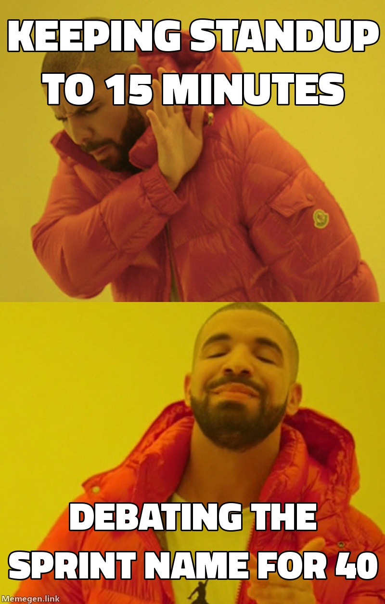
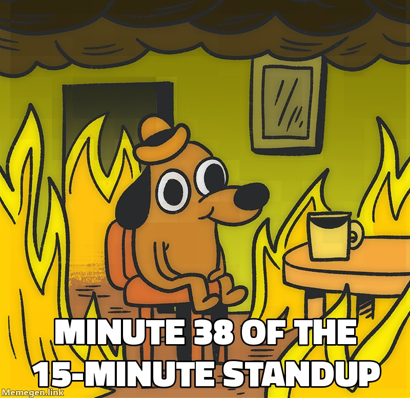
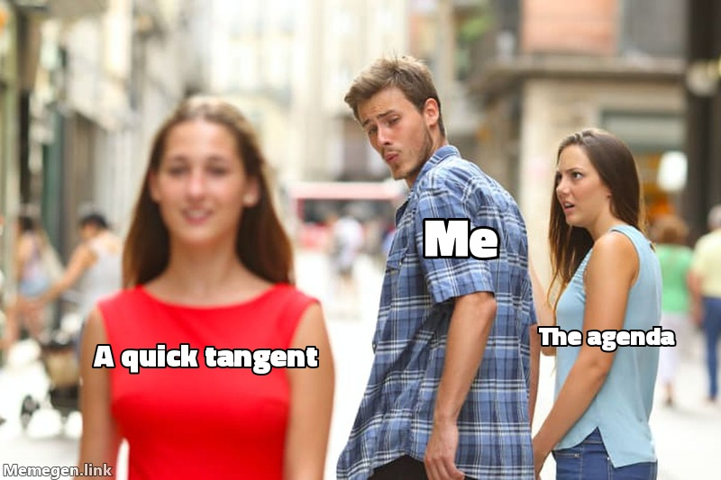
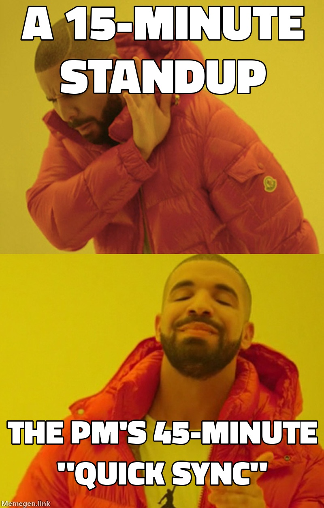

✻ Claude Code
> make a meme about standups that run long
⏺ make_meme(standups that run long)
⎿ Drafting in the Meme Factory panel.
> fix the flaky retry test
⏺ Read(queue.spec.ts)
⎿ Read 212 lines
⏺ The retry waits on a real timer.
Faking the clock instead.
⏺ Update(queue.spec.ts)
⎿ +4 −2
⏺ Bash(npm test)
⎿ 38 passed
✕
MEME FACTORY standups that run long
MEME FACTORY ✓ Approved · Drake
MEME FACTORY ● Posting · Drake
MEME FACTORY ✓ Posted · Drake
● Write ○ Judge ○ Render Writing captions…
✓ Write ● Judge ○ Render Judging…
✓ Write ✓ Judge ● Render Rendering…
1: ● Drake 8 2: ○ This is Fine 7 3: ○ Distracted 7
1: ○ Drake 8 2: ● This is Fine 7 3: ○ Distracted 7
1: ○ Drake 8 2: ○ This is Fine 7 3: ● Distracted 7
1: ● Drake 9 2: ○ This is Fine 7 3: ○ Distracted 8




Keeping standup to 15 minutes
Debating the sprint name for 40
Minute 38 of the 15-minute standup
A quick tangent / Me / The agenda
A 15-minute standup
The PM's 45-minute "quick sync"
a: Approve r: Remix m: More like this
c: Copy v: Browser t: Talk
A 15-minute standup
The PM's 45-minute "quick sync"
Post to: ★ #social ▾
1: ★ #social 2: ★ #eng-fun 3: #random
p: Post to #social b: Back c: Copy n: New
You confirm each post · change it in v → Settings
Post to #social on Slack?
y: Post it n: Cancel
● Posting to #social on Slack…
Uploading the image. Keep working.
✓ Posted to #social on Slack
o: Open in Slack s: ★ Save n: New meme
────────────────────────────────────────────────────────────
you meaner, make it about the PM
factory Remixed all three. Sharper PM angle.
Say: meaner · use 2 · approve · post to #social